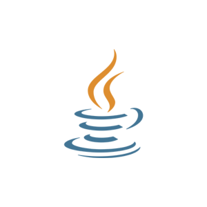
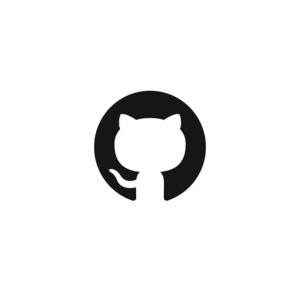

I am a computer engineer specializing in cloud technologies, with a strong focus on AWS. I have developed hands-on projects that solve real-world problems and drive innovation, while continuously exploring new advancements in cloud computing. I am skilled in optimizing performance, scalability, and security within cloud environments, and proficient in leveraging infrastructure as code for efficient cloud management and deployment. Currently, I am learning CI/CD pipelines using GitHub Actions to streamline software delivery processes and gaining expertise in infrastructure as code with Terraform to automate and manage cloud resources. Additionally, I know Git for team collaboration and version control, which enhances code management and project efficiency. I am dedicated to staying ahead of industry trends and mastering emerging cloud technologies.
• AWS Cloud Practitioner
• AWS Solutions Architect
• Cybersecurity Fundamentals for Engineers
• Created profiles for clients and remotely monitored PC statuses to ensure optimal performance and security.
• Completed cybersecurity courses to enhance skills in system assessment and threat protection.
• Configured and managed PC workstations, tailoring setups to meet client needs and organizational standards.
• Ensured reliable and efficient technological operations through proactive system management.
• Specialize in creating visually engaging infographics and providing video editing services for international clients.
• Handle photo editing projects for government agencies, delivering high-quality and professional results.
• Pursuing a Bachelor of Science in Computer Engineering, gaining a solid foundation in hardware and software technologies.
• Gained expertise in various programming languages to build and optimize software solutions.
• Learned machine learning techniques and applied them to real-world problems.
• Studied software design principles, focusing on creating scalable and maintainable applications.
• Explored the Software Development Life Cycle (SDLC) to understand the full project development process.
•Explored how hardware components work together to create efficient computing systems.
• Designed circuits and studied the architecture of microprocessors.
• Gained knowledge of networking concepts and protocols.
• Designed and deployed a personal resume website hosted on AWS as part of the Cloud Resume Challenge.
• Implemented front-end CI/CD pipelines and Infrastructure as Code (IaC) to highlight cloud computing and DevOps expertise.
• Integrated cloud technologies like S3, Lambda, DynamoDB, and serverless architecture.
Documentation• Serverless CRUD web application using AWS technologies to securely add, edit, delete, and view tasks.
• Features include front-end hosting with AWS S3 and CloudFront, serverless back-end with Lambda and API Gateway, and DynamoDB for data storage.
• Authentication powered by AWS Cognito ensures secure user access and data integrity.
Live Website Demo | Documentation
• Java-based Health and Fitness Application to track fitness goals and monitor overall health.
• Features modules for workouts, nutrition tracking, personalized health goals, and progress reports.
• Includes BMI calculation, fitness tips, and a user-friendly interface for seamless navigation and management.
Documentation• Covers foundational skills like secure SSH connections, setting up an IDE with VSCode and Remote-SSH extension, and deploying Java-based web applications with Maven.
• Provides practical instructions for remote server management and cloud-based DevOps setups.
• Demonstrates essential techniques for application development in a cloud environment.
View Project
Details setting up Git on an EC2 instance, initializing a repository, and managing files with Git commands like git add, git commit, and git push.
Explains using GitHub personal access tokens for secure authentication and streamlined code management.
Demonstrates an efficient workflow for deploying and managing web app code updates from GitHub to the cloud.
View Project